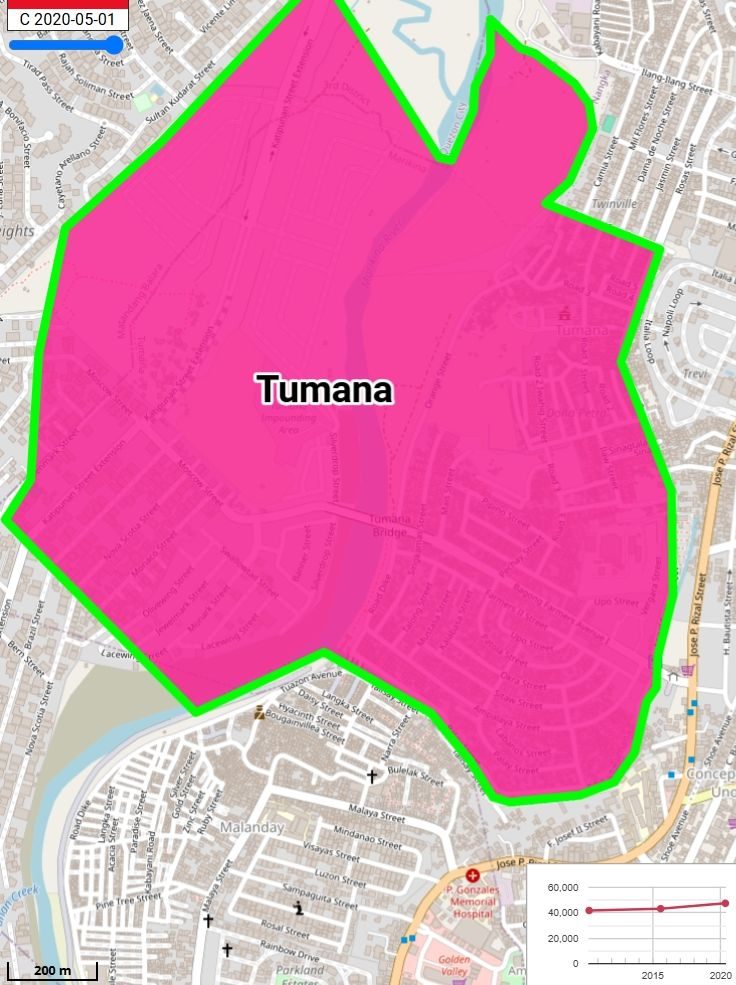
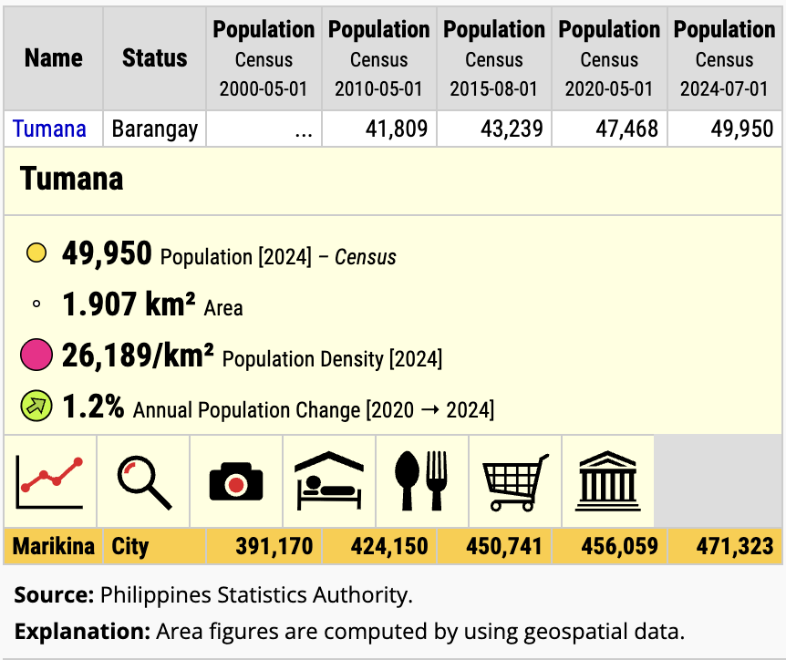

History of Barangay Tumana
Ang Barangay Tumana ay matatagpuan sa hilagang-kanlurang bahagi ( northwest ) ng Marikina City, malapit sa pampang ng Marikina River. Napapalibutan ito ng mga Barangay Nangka ( northeast ), Concepcion Uno ( east ), at Malanday ( South ). Ito ay nasa bahagi ng 14.6562, 121.0973, malapit sa tulay na nag uugnay sa Marikina at Queson City. Batay sa datos at mga projection, ang populasyon ng Barangay Tumana sa Marikina City ay tinatayang nasa mahigit 49,000 hanggang 50,000+ para sa taong 2024-2025, na nagpapahiwatig na maaari itong umabot o lumagpas sa 50,000+ sa pagsapit ng 2026.


Ang salitang “Tumana” sa Barangay Tumana, Marikina City ay nagmula sa katutubong salita na tumutukoy sa isang uri ng lupain o lupang sakahan. Ito ay karaniwang tumutukoy sa matabang lupa sa tabing-ilog ( Marikina river ) na mainam para sa pagtatanim, na dati ay malawak na bukirin bago naging mataong komunidad na nilikha sa pamamagitan ng Republic Act No. 9432 noong 2007.
Ang Barangay Tumana sa Lungsod ng Marikina ay pormal na naitatag noong Abril 10, 2007, sa pamamagitan ng Republic Act No, 9432. Ito ay humiwalay sa Barangay Concepcion Uno upang maging isang ganap na brangay. Ang paglikha nito ay pinagtibay sa ilalim ng ika-13 Kongreso ng Pilipinas.
Ang Barangay Tumana ay dating bako-bako o mabato at maputik naman pag tag-ulan na nagsasanhi ng abala sa mga residente dito, at kaya't
nahihirapan ang mga transportasyon na dumaan sa kalsada, at dahil mababa lamang ang lupa ng Barangay Tumana kaya unting ulan lang ay nababaha
agad, lalo na pag may sakuna katulad ng bagyo na nagiging sanhi ng pagkalubog sa baha ng Brgy. Tumana.
Kaya ang Brgy. Tumana ay nakaranas ng malaking rehabilitasyon matapos ang mga kalamidad, na nagresulta sa mas mataas at sementadong mga kalsada
upang maiwasan ang mabato, maputik at ang mabilis na pagbaha sa barangay. Pagpapatayo ng mas matatag na mga pampublikong paaralan, at
pagpapaunlad ng mga simbahan upang maging sentro ng komunidad at evacuation center, pagkakaron ng mas maayos na barangay hall, health center
at mga pasilidad para sa sports.
Ang Barangay Tumana sa Marikina, na kilala bilang isang residential at komersyal na lugar, ay nagbago mula sa pagiging pamayanan malapit sa
ilog na nakadepende sa paggawa at maliliit na negosyo. Noon, laganap ang paggawa ng sapatos at pagbubukid, habang ngayon, mas nakatuon ito sa
serbisyo, pangangalakal, at mga trabahong administratibo, habang pinapanatili ang pangangalaga sa kalusugan at buhay ng mga mamamayan.
Pangunahing Trabaho/Kabuhayan Noon (Makasaysayan):
- Paggawa ng Sapatos: Marami ang nagtatrabaho sa maliliit na talyer (subcontractors) para sa industriya ng sapatos sa Marikina.
- Pagsasaka at Paghahalaman: Dahil malapit sa ilog (Tumana), marami ang nagsasaka ng mga gulay at iba pang pananim sa mga matabang lupain.
- Pangingisda: Hanapbuhay din ang pagkuha ng isda sa Ilog Marikina.
- Paggawa ng Hollow Blocks/Konstruksyon: Dahil sa pag-unlad ng lugar, naging trabaho rin ang paggawa ng mga materyales sa konstruksyon.
Pangunahing Trabaho/Kabuhayan Ngayon (Makabagong Panahon):
- Serbisyo at Kalakalan (Sari-sari Stores/Karinderya): Mas lumaganap ang mga maliliit na negosyo at tindahan.
- Trabaho sa Pabrika at Opisina: Mas marami na ang nagtatrabaho sa mga regular na kompanya, pabrika, o sa munisipyo.
- Trabaho sa Konstruksyon at Transportasyon: Tuloy-tuloy ang mga gawaing bahay at pampublikong sasakyan (tricycle drivers).
- Health at Barangay Services: Nakatuon din ang barangay sa mga serbisyong pangkalusugan at lokal na pamamahala.
Ang pagbabago ay dulot ng urbanisasyon at ang patuloy na pag-unlad ng Marikina bilang isang maayos na lungsod.